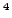
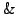
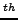

Over the last decade(s) there has been an increasing demand to predict unsteady flows. Knowledge of unsteady loads on, for example, wind turbine blades have proved to be of vital importance for an efficient life cycle design. Due to the unsteadiness of these problems and the large stiffness associated with large Reynold number flows, these computations can take months on a series of processors. To speed up these computations we use higher order multistage implicit time integrations schemes, because they were shown to be more computationally efficient than the standard backward difference schemes, also for engineering orders of accuracies. However, specially for larger time steps the performance of standard nonlinear multigrid deteriorates. The goal of this research is therefore to further speed up the computations.
Because of the potential speed up of a Jacobian-free Newton-Krylov (JFNK) method over standard nonlinear multigrid for these problems we
have implemented a JFNK method in our aerodynamic production code.
Preconditioning of the linear systems that arise after Newton
linearization is, however, of crucial importance for the computational
efficiency of the JFNK method . This paper therefore seeks for
an optimal preconditioner to compute unsteady, large Reynolds' number
flows solved with higher order implicit time integration schemes. Because
higher order implicit time integrations schemes are not yet often used,
not much is known on how to create an efficient preconditioner.
. This paper therefore seeks for
an optimal preconditioner to compute unsteady, large Reynolds' number
flows solved with higher order implicit time integration schemes. Because
higher order implicit time integrations schemes are not yet often used,
not much is known on how to create an efficient preconditioner.
Possible preconditioners are: (non)linear multigrid, a recursive variant of GMRES and (matrix-free) approximate factorizations (AF) of the Jacobian. (Non)linear multigrid, matrix-free AF's and GMRESR have the advantage of a low memory consumption. However, they require more computational time per iteration and the low-frequency errors may be poorly damped. AF's of (an approximation of) the Jacobian can be very powerful because errors in the whole frequency domain are damped. Furthermore, once the factorization has been computed it can be reused for next linear solves, which can make them relatively cheap to apply. Finally, this type of preconditioner is relatively straightforward to implement in our aerodynamic production code. We have therefore chosen to precondition the linear systems with a Jacobian based Incomplete Lower Upper factorization based on the footprint of the Jacobian (ILU(k)). Preliminary results showed that these AF's greatly outperformed multilevel AF's and AF's based on dual thresholds.
Disadvantages of ILU(k) preconditioners can be lack of robustness and large memory consumption. The lack of robustness is easily circumvented by slightly increasing the diagonal dominance of the Jacobian. A common approach to reduce memory usage is to neglect contributions further away than nearest neighbors in the Jacobian. However, for unsteady two-dimensional flows around wind turbine profiles on unstructured grids, we find a much better linear convergence with an ILU(k) preconditioner that is based on a lumped Jacobian. For the lumped Jacobian all contributions from neighbors of neighbors are included into the Jacobian. Hereafter the contributions from neighbors of neighbors are lumped to nearest neighbors and the AF is computed.
To further enhance the efficiency of the iterative solver we have investigated the successive combination of nonlinear multigrid and the JFNK method. Furthermore, we are investigating recycling of Krylov subspace to speed up the linear solves. In our paper results for a two and three dimensional unsteady test case are discussed.
| [1] | A. H. van Zuijlen, and H. Bijl. Implicit and explicit higher order time integration schemes for structural dynamics and fluid-structure interaction computations, Computers  Structures, Vol. 83, 93-105, 2005. |
| [2] | G. Jothiprasad, D.J. Mavriplis, D.J. and D. A. Caughey. Higher-order time integration schemes for the unsteady Navier-Stokes equations on unstructured meshes, Journal of Computational Physics, Vol. 191, 542-566, 2003. |
| [3] | D.A. Knoll and D.E. Keyes. Jacobian-free Newton-Krylov methods: a survey of approaches and applications, Journal of Computational Physics, Vol. 193, 357-397 2004. |
| [4] | E. Chow and Y. Saad. Experimental study of ilu preconditioners for indefinite matrices, Journal of computational and applied mathematics, Vol. 86, 387-414 1997. |
| [5] | P. Wong and D.W. Zingg. ``Three-Dimensional Aerodynamic Computations on Unstructured Grids Using a Newton-Krylov Approach''. 17 AIAA Computational Fluid Dynamics Conference, Toronto, Canada, June 2005, AIAA 2005-5231. |